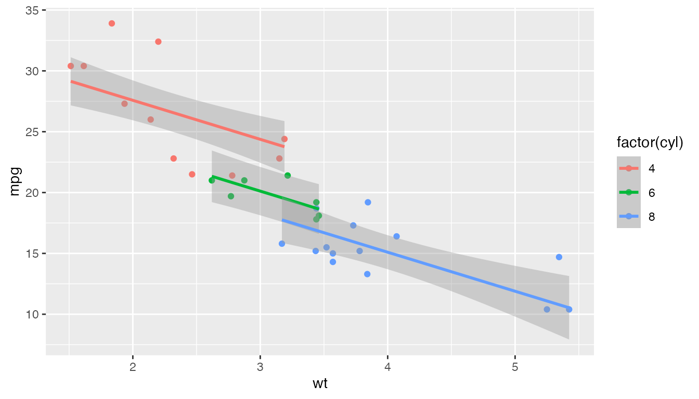
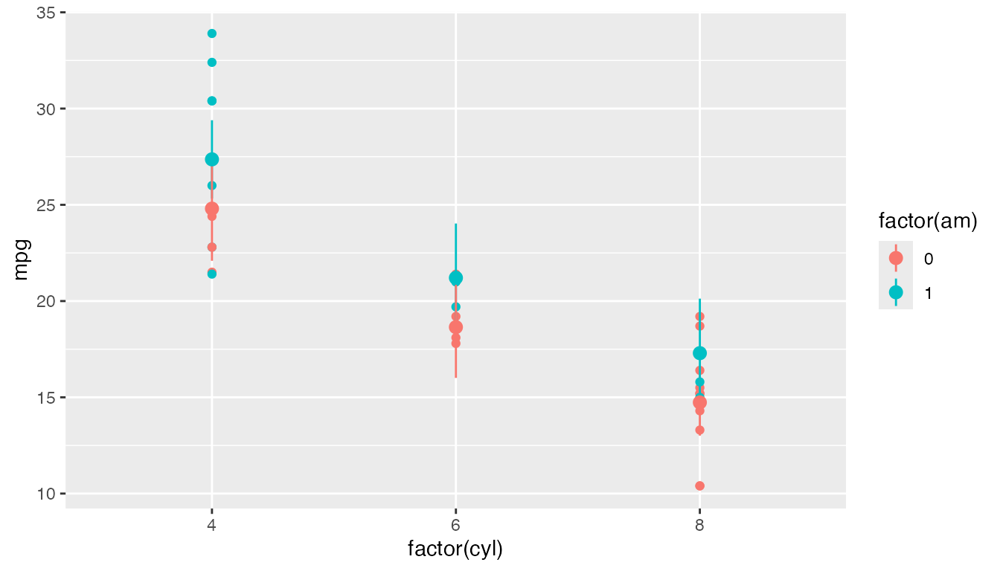

honestlm keeps familiar linear model workflows, but adds
guardrails around common interpretation traps.
library(honestlm)
#> honestlm: use honest_lm() for guarded linear model summaries, or as_honest_lm(lm(...)) for existing lm objects.Summaries
honest_lm() fits a regular lm() object with
an extra class. The estimates are ordinary linear-model estimates, but
the printed summary hides coefficient p-values by default.
fit <- honest_lm(mpg ~ wt + factor(cyl), data = mtcars)
summary(fit)
#>
#> Call:
#> lm(formula = mpg ~ wt + factor(cyl), data = mtcars)
#>
#> Residuals:
#> Min 1Q Median 3Q Max
#> -4.5890 -1.2357 -0.5159 1.3845 5.7915
#>
#> Coefficients:
#> Estimate Std. Error t value
#> (Intercept) 33.9908 1.8878 18.006
#> wt -3.2056 0.7539 -4.252
#> factor(cyl)6 -4.2556 1.3861 -3.070
#> factor(cyl)8 -6.0709 1.6523 -3.674
#>
#> Categorical predictors:
#> factor(cyl): 3 levels; reference level = 4
#>
#> Notes:
#> * Coefficient p-values are hidden by default. Use p_values = "warn" or "show" if you really want them.
#> * For post-hoc comparisons among factor levels, consider estimated marginal means, e.g. emmeans::emmeans() and pairs(). See https://rvlenth.github.io/emmeans/.
#>
#> Residual standard error: 2.557 on 28 degrees of freedom
#> Multiple R-squared: 0.8374, Adjusted R-squared: 0.82
#> F-statistic: 48.08 on 3 and 28 DF (model-level p-value hidden)
#> Warning: `factor(cyl)` has 3 levels. The coefficient rows for `factor(cyl)` are
#> comparisons to the reference level `4`, not tests of whether each category or
#> the overall predictor matters.For categorical predictors with more than two levels, coefficient
rows are comparisons to a reference level. They are not separate tests
of whether each category, or the whole predictor, matters. If p-values
are shown, the intercept p-value stays hidden unless you ask for
intercept_p_value = TRUE. For post-hoc comparisons among
levels, estimated marginal means are usually a better tool.
Sequential sums of squares
Base anova() for a single linear model with more than
one predictor reports sequential Type I sums of squares.
honestlm stops by default because those tables depend on
the order of terms in the formula. For term-level tests, use
car::Anova(model, type = 2) or use Type III sums of squares
with care.
anova(fit)
#> Error:
#> ! `anova()` for a single linear model with more than one predictor reports sequential Type I sums of squares. honestlm stops here because changing the order of terms can change the table. Use `car::Anova(model, type = 2)` for term-level tests, or type = 3 with care. If you really want Type I sums of squares, call `anova(model, beg = TRUE)`.If you really want the Type I table, you can ask for it explicitly.
anova(fit, beg = TRUE)
#> Analysis of Variance Table
#>
#> Response: mpg
#> Df Sum Sq Mean Sq F value Pr(>F)
#> wt 1 847.73 847.73 129.6650 5.079e-12 ***
#> factor(cyl) 2 95.26 47.63 7.2856 0.002835 **
#> Residuals 28 183.06 6.54
#> ---
#> Signif. codes: 0 '***' 0.001 '**' 0.01 '*' 0.05 '.' 0.1 ' ' 1
#> Warning: `anova()` for linear models reports sequential Type I sums of squares.
#> Those depend on the order of terms in the formula and are usually not the test
#> you want for models with multiple predictors. Use `car::Anova()` for Type II or
#> Type III sums of squares.Broom output
If broom is installed, tidy() removes
p.value by default and adds a contrast_note
column for factor contrast rows.
broom::tidy(fit)
#> # A tibble: 4 × 5
#> term estimate std.error statistic contrast_note
#> <chr> <dbl> <dbl> <dbl> <chr>
#> 1 (Intercept) 34.0 1.89 18.0 NA
#> 2 wt -3.21 0.754 -4.25 NA
#> 3 factor(cyl)6 -4.26 1.39 -3.07 comparison to reference level `4`; …
#> 4 factor(cyl)8 -6.07 1.65 -3.67 comparison to reference level `4`; …Model-aware plots
geom_lm_smooth() and stat_lm_means() are
designed to make plots match the linear model structure being
taught.
library(ggplot2)
ggplot(mtcars, aes(wt, mpg, colour = factor(cyl))) +
geom_point() +
geom_lm_smooth(interaction = FALSE)
ggplot(mtcars, aes(factor(cyl), mpg, colour = factor(am))) +
geom_point() +
stat_lm_means(interaction = FALSE)
Set interaction = TRUE when you want separate slopes or
full cell means.